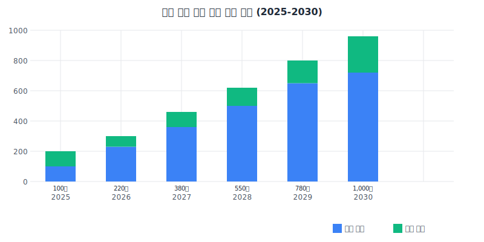

목차
1. 경제적 효과
1-1. 지역 산업구조 고도화 및 일자리 창출
1
신성장 동력 산업 육성
- 2030년까지 포천시 내 드론 관련 기업 70개 이상 유치 및 육성
- 드론 산업 연관 매출액 연간 800억원 이상 창출 (2030년 기준)
- 지역 총생산(GRDP) 내 첨단산업 비중 현 8.7%에서 15% 이상으로 확대
2
양질의 일자리 창출
- 2030년까지 드론 관련 신규 일자리 1,000개 이상 창출
- 직접 고용: 드론 제조, 소프트웨어 개발, 정비, 조종, 교육 등 600개
- 간접 고용: 연관 서비스, 유통, 마케팅 등 분야 400개 이상
- 청년 일자리(39세 이하) 비중 60% 이상 확보로 청년 인구 유출 방지
- 일자리 질적 수준 향상: 평균 연봉 4,500만원 이상의 중·고소득 일자리 비중 50% 이상
3
산업 생태계 활성화
- 드론 제조, 소프트웨어, 서비스, 교육 등 가치사슬 전반의 기업 육성
- 지역 내 창업 활성화: 연간 드론 관련 신규 창업 15건 이상 달성
- 외부 기업 유치: 국내외 드론 관련 기업 30개 이상 유치
- 산학연 협력 프로젝트 연간 20건 이상 추진으로 혁신 역량 강화
드론 산업 관련 고용 창출 전망 (2025-2030)

1-2. 지역 경제 파급효과
관광객 증가 및 체류형 관광 활성화
- 드론 행사 및 체험프로그램으로 연간 관광객 15만명 이상 추가 유치
- 체류형 관광 비율 현 12%에서 25%로 증가
- 관광객 1인당 평균 소비액 현 58,000원에서 85,000원으로 증가
지역 소비 활성화
- 드론밸리 종사자 및 방문객의 지역 내 소비로 연간 250억원 이상 소비 창출
- 지역화폐(포천사랑상품권) 사용량 30% 이상 증가
- 도심 상권 공실률 현 18%에서 10% 이하로 감소
부동산 및 건설 경기 활성화
- 드론 관련 기업 및 인력 유입에 따른 주택 수요 증가: 연간 300가구 이상
- 상업용 부동산 임대료 상승: 평균 15% 이상 (5년간)
- 신규 건축 및 리모델링 수요 증가: 연간 건설 투자액 150억원 이상 창출
세수 증대 효과
- 기업 유치 및 경제활동 증가로 연간 지방세수 50억원 이상 추가 확보
- 재정자립도 현 21.8%에서 25% 이상으로 개선
재정자립도 변화 전망
현재 (2025)
21.8%
목표 (2030)
25%
3. 도시 경쟁력 및 지속가능성 제고
3-1. 도시 브랜드 가치 향상
차별화된 도시 이미지 확립
- '드론 도시 포천'이라는 명확한 도시 이미지 확립
- 국내 드론 산업 중심지로서의 인지도 70% 이상 달성 (전국 성인 대상 설문 기준)
- 국내 도시 경쟁력 평가에서 현 45위권에서 30위권 내로 진입
국내외 네트워크 강화
- 국내외 드론 관련 컨퍼런스, 전시회 등 연 5회 이상 개최
- 해외 드론 도시와의 자매결연 5개 이상 체결
- 국제적 드론 경진대회 유치: 연간 참가국 15개국 이상 달성
관광·문화 콘텐츠 경쟁력 강화
- 드론 쇼, 드론 레이싱 등 특화 콘텐츠로 관광 명소화
- 드론 촬영 영상 콘텐츠 활용한 도시 마케팅 효과: SNS 노출 연간 1,000만 회 이상
- 특색 있는 도시 이미지로 MICE 산업 유치 강화: 연간 컨벤션, 세미나 등 50건 이상 유치
3-2. 환경 및 지속가능성 향상
친환경 기술 발전 기여
- 친환경 드론 기술 개발 및 적용: 전기추진, 수소연료전지 등 친환경 동력 드론 비중 70% 이상
- 온실가스 감축: 드론 활용 업무 효율화로 연간 CO2 배출량 500톤 이상 감축
- 환경 모니터링 고도화: 오염원 탐지 정확도 85% 이상 달성
스마트 농업 활성화
- 드론 활용 스마트 농업 도입 농가 300개소 이상 확대
- 농약 사용량 25% 이상 감소, 농작물 생산성 15% 이상 향상
- 농가 소득 증대: 드론 활용 농가의 평균 소득 20% 이상 증가
자원 효율성 제고
- 드론 활용 시설물 관리로 에너지 효율 10% 이상 개선
- 최적 경로 설정, 교통 흐름 개선 등으로 도시 물류 효율 20% 향상
- 인프라 유지보수 비용 연간 10억원 이상 절감
4. 정량적 경제 가치 추정 (2025-2030년)
포천 드론 밸리 구축을 통해 창출되는 경제적 가치를 정량적으로 추정한 결과, 2025년부터 2030년까지 6년간 총 8,590억원의 경제적 효과가 발생할 것으로 예상됩니다. 이는 연평균 1,430억원 수준의 경제 가치가 포천 지역에 창출됨을 의미합니다.
| 구분 | 주요 항목 | 경제적 가치 | 산출 근거 |
|---|---|---|---|
| 직접 경제효과 | 드론 관련 기업 매출 | 총 3,200억원 | 연평균 550억원 × 6년 (초기 300억원 → 후기 800억원으로 성장) |
| 고용 창출 효과 | 총 1,350억원 | 신규 일자리 1,000개 × 평균 연봉 4,500만원 × 3년 (일자리 단계적 창출 가정) |
|
| 창업 및 투자 유치 | 총 900억원 | 신규 창업 및 외부 투자 유치 금액 합산 (연평균 150억원) |
|
| 간접 경제효과 | 관광 수입 증대 | 총 680억원 | 추가 관광객 15만명/년 × 평균 소비액 7.5만원 × 6년 |
| 지역 소비 활성화 | 총 1,200억원 | 드론밸리 종사자 및 방문객 소비 (연평균 200억원) |
|
| 주택 및 상업시설 개발 | 총 900억원 | 주택 수요 300가구/년 × 평균 5천만원 × 6년 | |
| 공공 비용 절감 | 행정 효율화 | 총 120억원 | 인력 및 시간 절감, 업무 처리 효율화 (연평균 20억원) |
| 재난안전 대응 개선 | 총 180억원 | 재난피해 경감 및 대응 비용 절감 (연평균 30억원) |
|
| 시설물 관리 비용 절감 | 총 60억원 | 인프라 유지보수 비용 절감 (연평균 10억원) |
|
| 총 경제적 가치 | 총 8,590억원 | 연평균 1,430억원 수준 | |
※ 본 추정치는 한국드론산업협회, 경기연구원의 드론산업 경제적 파급효과 분석 자료와 유사 사례를 참고하여 산출되었으며, 경제환경 변화에 따라 달라질 수 있음
2. 사회적 효과
2-1. 인구구조 개선 및 공동체 활성화
청년 인구 유입 및 정착
교육 여건 개선
지역 공동체 활성화
2-2. 공공서비스 혁신 및 안전 강화
드론 기반 공공서비스 개선
안전한 도시 환경 조성
취약계층 지원 강화